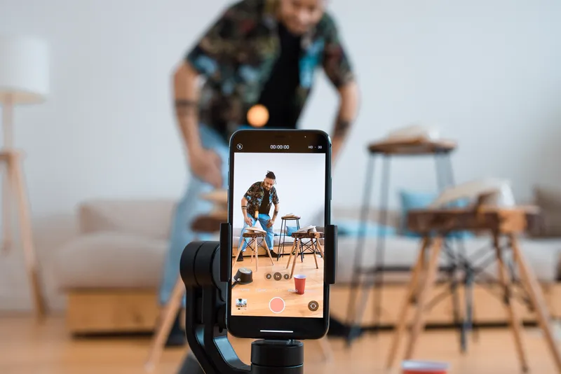
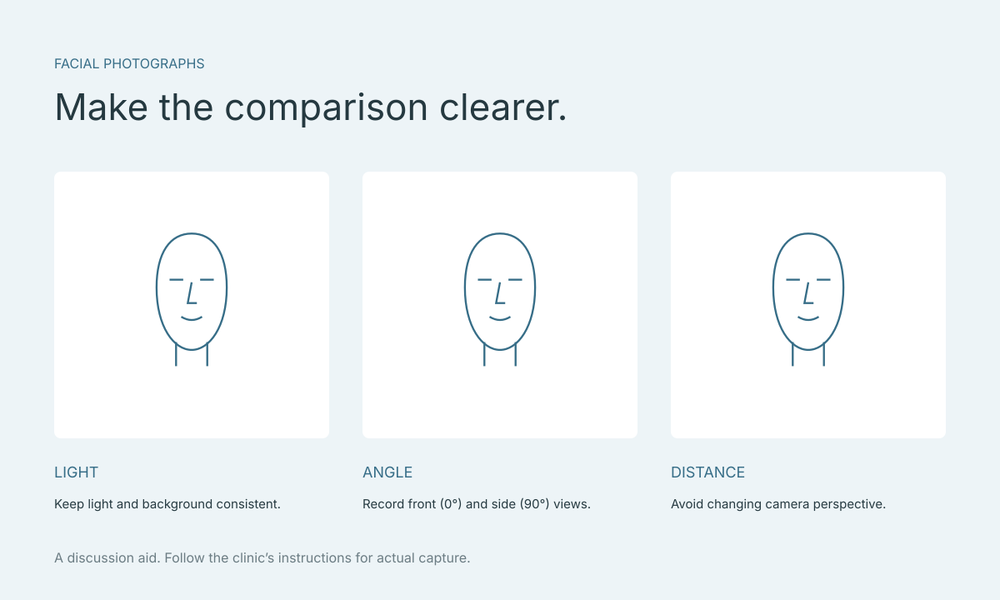

Preparing facial photos for a clinic consultation: light, angles and distance
The same face can look different in a selfie, a friend’s photograph and a clinic image. Before deciding that one image shows a problem or the result you want, check how it was made. This guide helps you prepare a conversation; it is not a measurement protocol or a guarantee that a photo will work with every app.

Key points
- Camera distance can change apparent proportions.
- Compare views with their capture conditions and original files.
- Consultation photographs do not establish treatment suitability.
Start with the question you want the photograph to answer
Write one sentence explaining its purpose: for example, “I want to discuss my side profile” or “I want to understand why these two views look different.” Ask the clinic which views it needs and how it receives them. Sending many attractive photographs is less useful if none addresses that question.
If the images are for an app, follow the instructions for the version you actually use. A photograph suitable for an informal discussion is not automatically a validated input for an analysis system or external 3D capture app.

Why a close-up selfie can change apparent proportions
Ward and colleagues’ 2018 mathematical study showed that short camera distances can change the apparent ratio of nasal width to facial width. It concerns photographic perspective, not the accuracy of a particular facial-analysis app.
A practical implication is to record how an image was captured and avoid treating a close selfie and a more distant photograph as equivalent. Ask the clinic what camera setup its task requires. This guide does not prescribe a universally correct capture distance.
Keep the conditions understandable when comparing images
For an initial conversation, use conditions that show the features you want to discuss clearly, and try to keep them consistent. The purpose is to understand what changed, rather than produce an advertisement. Note a strong shadow or a different head position before discussing apparent shape differences.
Changing head angle, distance and zoom together makes it harder to know why two views differ. Expressions also change what is visible. If you cannot reproduce the original conditions, explain the difference rather than editing photographs to make them look like a matched set.
- Keep a record of the camera and settings used for each set.
- Check for blur, missing detail and anything obscuring the area being discussed.
- Record the date, view and relevant capture conditions.
Understand front and side views
Separate front (0°) and side (90°) photographs can support questions from more than one angle, but they are still 2D images, not a continuously rotatable 3D model. These 2D views can be analysed and simulated; Faceliora Clinic imports a 3D model created in an external app.
Use the same question in each view and note what remains unclear. An obscured or blurred view may need to be captured again with the clinic’s guidance rather than enlarged until it loses useful detail.
Separate originals, edited references and simulations
Keep the unfiltered original. If an edited reference helps explain your preference, label it as edited. Naming files “original” and “edited reference” helps the reader avoid treating both as photographs of your actual appearance.
Keep simulations separately with their purpose and the changes being discussed. An appealing image does not establish suitability for treatment or guarantee a future result. It provides a starting point for questions with the clinician.
Check these points before sending
Confirm the purpose, recipient and agreed channel. If you are only asking whether software supports a workflow, start with the file type and intended process; a personal photograph may not be necessary in the first message.
- Identify the concern and relevant views.
- Confirm capture instructions with the actual clinic or app.
- Keep originals separate from edited references.
- Ask how images will be stored or passed on.
- Avoid deciding on a procedure from a single photograph.